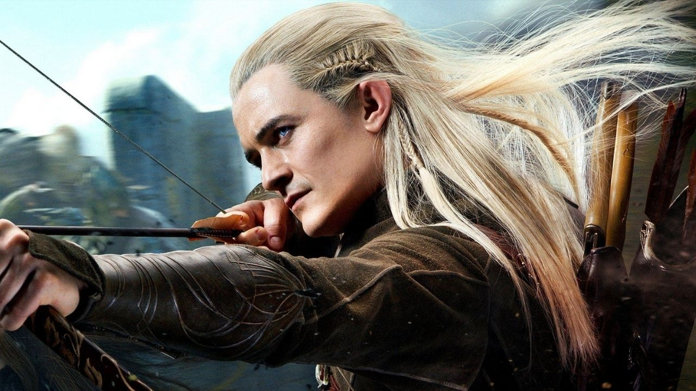

Senhor dos anéis é um mundo escrito por J. R. R. Tolkien, que mistura fantasia, magia jornadas perigosas e uma aventura realmente inesquecível, a história se passa na terra média, um mundo fictício que é habitado por elfos, anões, hobbits e humanos, além de outras criaturas. Essa trilogia de filmes marcou muito minha vida especialmente no período da infância, pois quando eu chegava da escola meu pai sempre foi um grande colecionador de DVDS então pedia para ele colocar o senhor dos anéis para eu assistir, meu personagem favorito é o Legolas, um elfo que utiliza um arco e flecha e todas as cenas de ação mais marcantes do filme ele está envolvido. Essa trilogia é considerada um marco da história do cinema, os três filmes foram lançados entre 2001 e 2003, foram filmados em sequência o que dá uma profundiade e uma continuidade única para os filmes.
